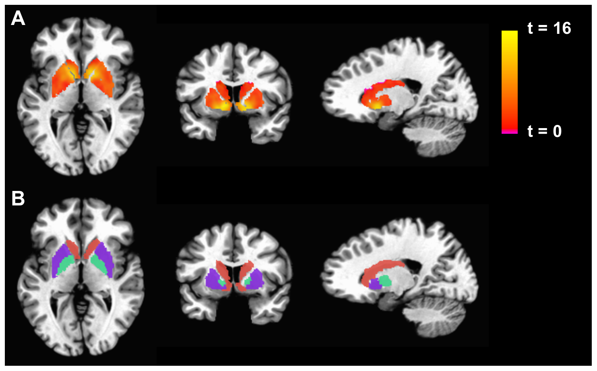

第 5 章
大脑的账本
现在，请你想象自己必须做一个决定。不是那种可以慢慢想的决定——不是点菜、选电影、考虑周末去哪里。是一个你立刻就要回答的决定。
你手里有一笔钱，数额是你两个月的工资。有人给你两个选项。选项A：你确定损失掉这笔钱的一半——一个月工资，当场划走，干净利落。选项B：你抛一枚硬币。如果是反面，你损失掉全部——两个月工资，一分不剩。如果是正面，你一分钱都不损失。
你没有时间咨询任何人。你不能说“我再想想”。你必须选。选A，还是选B？先不要往下读。真的选一下。把你的选择记在心里——或者写在手边随便一张纸上。你选了哪个？
绝大多数人选B。这不是猜谜游戏。这是一个被重复了几十年的实验。最早做这个实验的人——丹尼尔·卡尼曼和阿莫斯·特沃斯基——在1970年代拿这个问题问了成百上千个被试，其中很多人是以色列大学里的数学系学生，对概率计算熟得不能再熟。他们算得出抛硬币的期望值：选项A的期望值是确定的负一个月工资；
选项B的期望值也是负一个月工资——50%乘以负两个月工资，加上50%乘以零，等于负一个月工资。两个选项在数学上完全等价。
但他们的身体不这么选。身体在听见“确定损失”这四个字的时候已经做出了反应。掌心微微出汗。心跳有一点加速。喉咙后面涌上来一种很古老的感觉，像是被人从手里抢走东西时的那种抗拒。这种抗拒比任何概率计算都快。它不等你算期望值。它在你开始算之前就已经替你投了票。
这就是前景理论进入的入口。在卡尼曼和特沃斯基之前，经济学里占统治地位的是预期效用理论。这个理论假设人是理性的——至少在大体上是理性的——人在做决策时会计算每个选项的期望值，然后选最大的那个。如果两个选项的期望值相等，人就无所谓选哪个。但实验数据反复打了这套假设的脸。人在期望值相等的选项之间不是无所谓的。人有强烈的偏好。而且这种偏好会随着问题的表述方式发生系统性的翻转。
现在换一个问题。还是你。还是那笔相当于两个月工资的钱。但这次选项变了。
选项C：你确定得到一个月工资，当场到账。选项D：你抛一枚硬币。如果是正面，你得到两个月工资；如果是反面，你一分钱都得不到。选C，还是选D？先选。绝大多数人选C。
注意这里发生了什么。在损失的情境里，大多数人选择冒险——宁愿赌一把也不愿接受确定的损失。在收益的情境里，大多数人选择保守——宁愿锁定确定的收益也不愿冒险去博更大的收益。
但如果你把这两个情境放在一起看，你会发现一个很奇怪的东西：同一个大脑，在面对数学上对称的两个决策问题时，做出了不对称的选择。损失时变赌徒，收益时变会计。
这不是逻辑推理的结果。这是某种更底层的东西在运行。卡尼曼和特沃斯基给这个东西画了一张图。他们管它叫价值函数。
这张图长得很简单：一条S形曲线，穿过一个中心点。中心点不是零——不是客观上的零。中心点是“现状”，是“此刻我拥有什么”。
曲线的右半边是收益区域，曲线往上走，但越走越平——这意味着每多得到一单位收益，带来的主观价值增加越来越小。
你从零赚到十万块的感觉，和你从一千万赚到一千零十万的感觉，完全不一样。前者改变你的生活，后者只是账本上的一个数字变动。
曲线的左半边是损失区域。这条曲线往下走，但它陡得多——比收益那边陡得多。这意味着损失一单位带来的主观痛苦，远大于收益一单位带来的主观快乐。而且这条曲线在损失区域也是越走越平的——但它的起点就已经比收益那边深了很多。
这条曲线不是卡尼曼和特沃斯基编出来的数学游戏。它是从成百上千次实验中拟合出来的——从人们在纸上画下的选择里，从他们犹豫的时间长度里，从他们选了之后又被追问“你确定吗”时改口的方式里，一点一点描出来的。
这条曲线揭示了一个大脑运行的基本事实：大脑记账的方式和会计记账完全不同。会计记的是客观数字——收入就是收入，支出就是支出，一块钱就是一块钱。大脑不这么记。大脑给每一笔可能的得失都打了一个折扣——不是按数学公式打折，是按生理反应打折。
确定的损失被放大，概率性的损失被缩小；确定的收益被放大，概率性的收益被缩小。
这个折扣率不是固定的。它会变。在什么情况下变？答案藏在实验的一个变体里。
卡尼曼和特沃斯基在最早的那批实验里就发现了一个现象：问题的措辞可以翻转选择。如果你把同一个决策问题用“存活率”来表述而不是用“死亡率”来表述，医生的治疗方案选择会截然不同——尽管两种表述在数学上完全等价。“手术后一个月存活率为90%”和“手术后一个月死亡率为10%”是同一个事实，但读到前一句话的医生更倾向于推荐手术，读到后一句话的医生更倾向于保守治疗。
措辞改变了什么？措辞改变了参照点。“存活”这个词把参照点锚定在活着的状态，“死亡”这个词把参照点锚定在死的状态。从活着往下看损失，和从死亡往上看收益，大脑的账本会得出完全不同的估值——哪怕算的是同一笔账。
这就是前景理论的核心洞见：大脑不是按绝对水平来估值的，是按相对于参照点的变化来估值的。而参照点本身是灵活的——它可以被情绪、情境、措辞、身体状态甚至房间里有没有异味实时调制。这个洞见大到了令人不安的程度。
因为这意味着，你的决策不是从你的“真实偏好”里长出来的。你的偏好本身就是在决策现场被临时组装出来的——由参照点的位置、折扣率的大小、损失区域和收益区域的斜率差异共同决定。而这些东西的设定值，在你意识到自己正在做决策之前，就已经被调好了。
现在我们要面对一个更难的问题：这套系统为什么会存在？为什么进化没有把它淘汰掉？
一个容易想到的答案是：这套系统是非理性的，是认知缺陷，是大脑处理复杂信息时的懒惰捷径。这个答案在几十年的行为经济学文献里反复出现。“偏误”“谬误”“非理性”——这些词铺满了从科普读物到学术论文的各个层面。人是会犯错的动物，前景理论不过是给这些错误画了一张精确的地图。
但这个答案有一个问题：如果这套系统真的只是缺陷，为什么它如此普遍？为什么它跨越文化、跨越教育水平、跨越历史时期？为什么连那些受过专业概率训练的人——比如前面提到的数学系学生——也无法在直觉层面关掉它？进化不保留纯粹的缺陷。
如果一个性状在种群中普遍存在并且难以被训练消除，那它大概率在某个进化阶段承担过重要的适应性功能。
让我们回到那个场景——你在损失情境里选了冒险一搏。你为什么会这么选？从数学上看这不理性，因为期望值相等。但从生存上看呢？
想象一个更新世时期的狩猎采集者。她储存了一小堆块茎，够吃三天。一场小规模的部落冲突或者一次不成功的狩猎可能让她失去其中的一半——这是确定的损失。但如果她冒险去一个更远但可能有更多块茎的地方挖掘，她有可能补回损失甚至获得更多——也有可能空手而归甚至受伤。数学上这两种策略可能期望值相等。但生存上呢？
如果她接受确定损失，她的储存从三天降到一天半——这在更新世的环境里可能已经低于生存阈值了。低于阈值，死亡就是确定的，只是时间早晚的问题。而冒险虽然可能让她死得更快——如果她受伤的话——但也可能让她恢复到安全线以上。
在生存阈值附近，大脑把“确定损失”编码为“确定危险”，把“概率性损失”编码为“概率性危险”。
而进化给几乎所有动物的基本程序都是：面对确定危险时如果不行动就是等死，面对概率性危险时如果行动可能加速死亡但也可能逃生。前者激活的是僵住或逃跑反应，后者激活的是冒险搏一把的冲动。这不是数学计算。这是生存算法。
反过来看收益情境。如果你已经有了够吃三天的块茎，现在有人给你一个机会：确定多得到一天的量，或者50%概率多得到三天的量但50%概率什么都得不到。在更新世的环境里，确定多得到一天的量意味着你的安全边际从三天变成四天——这大大提高了你在下一次狩猎失败时的存活概率。而冒险去博三天的量虽然诱人，但如果失败你就还是只有三天——而你本来就有三天。确定收益提高生存概率，概率性收益不改变当下的安全水平。所以大脑在收益区域变保守——不是因为大脑胆小，而是因为在更新世的环境里，确定的增量比概率性的增量更有生存价值。
这套算法不是为现代金融市场设计的。它不是为股票、债券、期权、房贷、创业决策设计的。它是为更新世非洲稀树草原上的觅食决策设计的。
在那个环境里，决策的后果在几小时到几天内就会显现；损失的底线是死亡；信息的来源是亲身经验和少数同伴的口述；概率的估算基于过去几十次类似情境的记忆样本。在那个世界里，前景理论描述的那条S形曲线是一套高度适应性的生存工具。它让我们的祖先在面对捕食者时果断逃跑而不是计算期望值，在面对食物短缺时冒险迁徙而不是坐以待毙，在面对意外收获时保守囤积而不是挥霍一空。
问题在于，这套工具被原封不动地装进了现代人的颅骨里。现代社会把同一套算法扔进了一个完全不同的环境：决策的后果可能在几十年后才显现；损失的底线远高于死亡——你可能永远不会饿死，但你会在退休时发现账户空了；信息的来源是屏幕上的数字、图表和专家评论；概率的估算基于统计模型和历史数据——这些东西大脑的古老账本根本读不懂。大脑读不懂统计模型，但它读得懂情绪。读得懂恐惧。读得懂贪婪。
读得懂“别人都在买”时那种害怕错过的焦虑——这种焦虑和更新世时期看到部落里其他人都在往一个方向跑时的那种焦虑是完全同源的：如果他们都在跑而你不跑，你可能被落在后面——在后面意味着被捕食者盯上。
现在我们可以回过头去看前四章的那些案例了。1637年冬天的荷兰织工，面对郁金香球茎价格一天涨一截的行情，他的大脑账本在运行什么算法？价格上涨被编码为收益区域的持续右移——参照点不断被刷新，昨天的价格成了新的现状，今天的价格成了新的收益。每错过一天没买，大脑就把“没赚到的钱”编码为损失——而我们已经知道，损失区域的曲线比收益区域陡得多。损失的痛苦驱动他做出决策——不是贪婪驱动他买，是害怕损失的痛苦驱动他买。
1941年12月珍珠港的美国情报分析员，面对截获的日军电报碎片和互相矛盾的评估报告，他的大脑账本在运行什么算法？
每一个可疑信号都意味着要推翻已有的判断框架——推翻框架在大脑里被编码为认知层面的损失：承认自己之前错了，承认几个星期的工作白费了，承认自己向长官汇报的判断需要撤回重写。而维持现有判断被编码为收益区域的保守锁定——我们已经知道，在收益区域大脑倾向于不冒险。所以情报分析员的大脑选择不推翻——不是因为他愚蠢或懒惰，而是因为他的大脑账本把“维持现状”算成了收益、把“承认错误”算成了损失。2007年6月的华尔街交易员——我们在前一章结尾停在了那个节点上——面对次级抵押贷款债券的价格还在上涨但违约率已经开始攀升的数据，他的大脑账本在运行什么算法？
退出市场意味着锁定当前利润——这是确定的收益，大脑喜欢。但如果退出之后市场继续上涨呢？那“没赚到的钱”就会被重新编码为损失——而且这种损失比当初就没进场更痛，因为它离参照点更近：你已经赚到了那些钱（至少在账面上），然后你“弄丢了”它们。大脑对“得而复失”的编码比“从未得到”痛得多——价值函数在损失区域的陡坡在这里发挥了全部威力。所以交易员的大脑选择继续持有——不是因为他不理性，而是因为他的理性正在被一套比他古老得多的算法拖着走。
还有上一章那位花了七年婚姻才看清代价的人。他在婚前把未婚妻的某些行为解释为“有个性”——他的大脑账本当时在运行什么算法？承诺已经做出，婚礼已经筹备，亲友已经通知，社会期望已经锚定——这些构成了他的参照点。推翻婚约被编码为巨大的社会损失和情感损失：面子、已经花出去的钱、对未来的想象、两个人共同的朋友圈。而接受那些“小问题”被编码为概率性的未来损失——也许这些问题是暂时的呢？也许结婚之后会好呢？大脑在损失区域倾向于冒险一搏——宁愿赌婚后会改善，也不愿接受当下确定的巨大损失。所以他选了赌。
这些案例跨越了四个世纪、三个大洲、从金融市场到战场情报到私人卧室的不同领域。
但它们共享同一个底层算法：大脑在决策瞬间运行的价值核算系统，与事后冷静分析时完全不同。这套系统放大当下的、确定的、生存相关的信号；屏蔽远期的、概率性的、只有在长时段回溯中才可见的代价信息。
这恰恰回应了那个最强反方解释——所谓“代价盲视”不过是事后归因的叙事幻觉：人们并非看不见代价，而是在信息不完备、时间压力下做了当时最优的贝叶斯更新，事后被结果偏差重新编码为“盲目”。这个解释有它的力量。它正确地指出了事后之明是一种认知偏误——当我们知道结果之后，会系统性地高估事前可以预测的程度。它也正确地指出了决策者在信息不完备和时间压力下确实在努力做出最好的判断。
但它忽略了一个关键事实：即使在信息完备、无时间压力的实验条件下——比如卡尼曼和特沃斯基那些坐在安静房间里、有充分时间思考、所有概率都明确写在纸上的被试——大脑仍然系统性地偏离期望值计算。数学系学生知道两个选项期望值相等，他们算得出来，但他们仍然选了冒险规避损失或保守锁定收益。
这不是信息不完备的问题。这不是时间压力的问题。这是大脑的价值核算结构本身的问题。贝叶斯更新假设大脑在处理新信息时按照概率法则更新信念。
但前景理论的实验数据表明，大脑在更新信念之前，先对信息进行了一道生理折扣——而这道折扣的折扣率是由情境设定的参照点决定的，不是由概率法则决定的。同样的概率信息，从“存活率”角度看到的大脑估值和从“死亡率”角度看到的大脑估值不同——尽管贝叶斯公式对两者一视同仁。所以反方解释只对了一半。
“代价盲视”确实包含了事后归因的成分——任何事后分析都会受到结果偏差的影响。但它不仅仅是事后归因。它在事前就已经发生了——在大脑对信息进行生理折扣的那一刻就发生了。代价不是事后才被“重新编码”为不可见的；它在事前就被折扣成了一个看起来很小的数字，小到不足以改变决策。这就是“大脑的账本”这个比喻的精确含义：这本账记的不是客观损益，而是经过生理折扣后的主观价值。而折扣率本身受到情境、情绪和身体状态的实时调制。
当你坐在一间安静的实验室里读着纸上的数字时，折扣率是一个值；当你的钱真的被拿走时——后来有研究者真的这么做了，用真金白银重复了前景理论的实验——折扣率是另一个值；当房间里有令人不快的气味时，折扣率又是另一个值；当你刚看完一场悲剧电影时，折扣率还会变。
这些调制不是随机的噪声。它们是有规律的。规律指向同一个方向：大脑在面对潜在损失时变得更敏感——折扣率降低，损失被放大——当身体处于应激状态时；而当身体处于安全舒适的状态时，折扣率升高，损失看起来没那么可怕。这意味着大脑的账本不是一台孤立运行的计算机器；它是被身体状态实时调制的生理器官的一部分。
这个结论把我们推到了下一道门前。我们已经知道大脑有一套与事后理性分析不同的价值核算系统。我们知道这套系统在什么条件下最活跃——当决策涉及潜在损失时、当参照点被锚定在近期高点时、当身体处于应激状态时。我们知道这套系统是进化的遗产——它在更新世环境里是高度适应性的生存工具。

但我们还不知道它是怎么运行的。它在脑的什么部位？哪些神经回路参与了折扣率的调制？当大脑屏蔽远期代价信号时，哪些脑区在活跃？哪些脑区被抑制？那道横亘在理性知识与情感决策之间的屏障，在神经层面是什么样子的？
这些问题不再属于实验心理学的范畴——至少不完全属于。它们属于认知神经科学的范畴。要回答它们，我们需要走进fMRI扫描仪的房间。需要看大脑在决策瞬间的血氧水平变化。需要追踪那些在意识觉察到代价之前就已经完成的神经活动。
这不是比喻意义上的“走进”。这是字面意义上的走进——走进一间地下实验室，躺进一台巨大的环形磁共振扫描仪，头被轻轻固定住，耳机里传来实验指令，屏幕上跳出数字选项，你的拇指按在按钮上准备选择。而你完全意识不到的是，在你做出选择之前的几百毫秒里，你的脑岛和前扣带皮层已经先于你的意识投完了票。